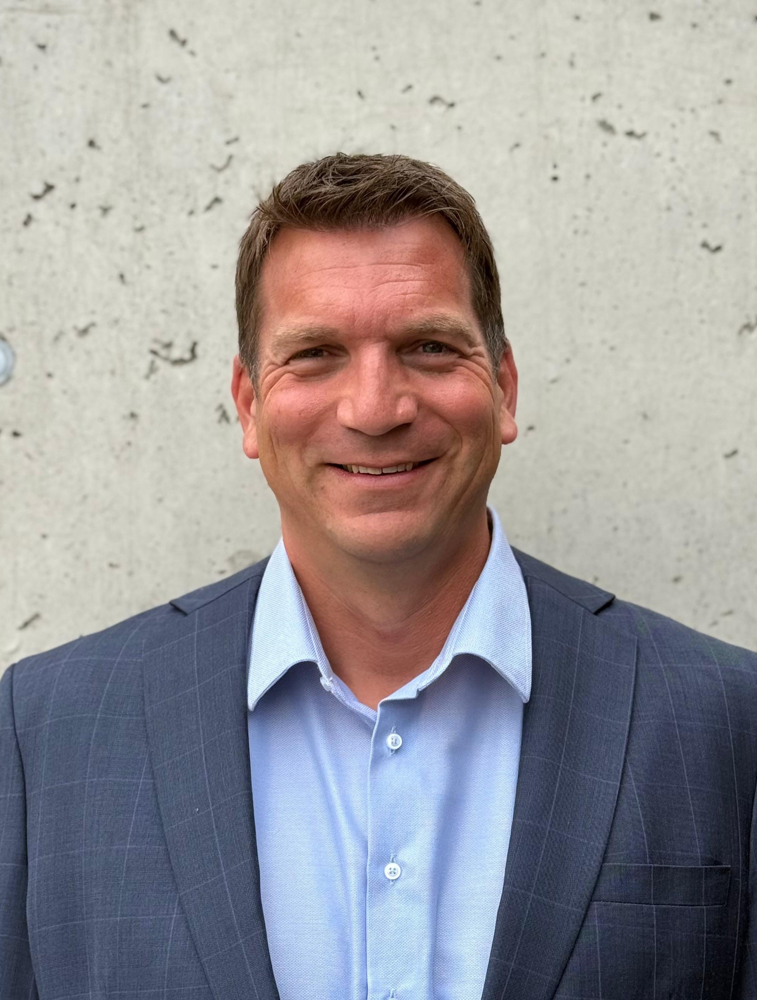

Priv. Doz. Dr. med. univ. Stefan Hofstätter
Facharzt für Orthopädie und orthopädische Chirurgie & Facharzt für Traumatologie
Meine Philosophie
Ganzheitliche Orthopädie auf höchstem NiveauAls Facharzt für Orthopädie und orthopädische Chirurgie verbinde ich wissenschaftliche Forschung mit klinischer Praxis und breiten Zusatzausbildungen. Mein Ziel ist eine ganzheitliche, maßgeschneiderte Therapie für jeden Patienten. Dabei kombiniere ich bewährte kassentherapeutische Therapiemaßnahmen gezielt und bei Bedarf mit den neuen bioregenerativen Therapiemodellen, um für jede Patientin und jeden Patienten die passende Behandlung zu finden.

Verständnis aus eigener Erfahrung
Die Faszination für das Zusammenspiel von Knochen, Gelenken, Sehnen und Muskeln prägt mich seit meiner Jugend. Als ehemaliger Basketball-Bundesligaspieler (Trodat Wels / WBC Wels) und Junioren-Nationalspieler kenne ich körperliche Belastungen und Regeneration aus erster Hand. Ein Bandscheibenvorfall in jungen Jahren führte zum Ende meiner Basketballkarriere und einer langen Rehabilitation.
Arthrose behandeln, Lebensqualität erhalten
Mein fundiertes akademisches und chirurgisches Wissen sowie meine persönlichen Erfahrungen nutze ich für Patienten jeden Alters. Fehlstellungen, Überlastungen und altersbedingter Verschleiß führen häufig schleichend zu Arthrose, die Gelenke und Knorpel zunehmend belastet und die Beweglichkeit im Alltag spürbar einschränken kann. Durch frühzeitige Behandlung helfe ich Ihnen, auch im höheren Alter aktiv, mobil und schmerzfrei zu bleiben.
Beruflicher & Akademischer Werdegang
- Seit 2020: Kassenordination für Orthopädie und orthopädische Chirurgie (Übernahme der etablierten Ordination von Dr. Hummer Franz).
- 2018–2019: Präsident der Österreichischen Gesellschaft für Fußchirurgie.
- 2014: Ernennung zum Gastprofessor an der Medizinischen Universität Wien.
- 2013: Habilitation (Privatdozent) an der Paracelsus Medizinischen Privatuniversität (PMU) Salzburg.
- 2013–2020: Oberarzt an der Abteilung für Orthopädie im Klinikum Wels-Grieskirchen sowie Koordinator der Fußkompetenz.
- 2012–2020: Gründer und Leiter des Orthopädiezentrums Eferding (Wahlarzt).
- 1996–2003: Medizinstudium Universität Wien und Karolinska Institut Stockholm und Promotion an der Universität Wien.
Auslandsaufenthalte & Fellowships
- 2010: EFORT Travelling Fellowship (Schweiz: Balgrist Klinik Zürich, AO Foundation Davos, Inselspital Bern).
- 2007: EFAS Travelling Fellowship (USA: Duke University, Orthocarolina Institute, Mercy Medical Center).
- 2005: Research Fellow am Biomechanics Laboratory der Duke University (NC, USA).
- 2002: Erasmus-Auslandsstudium am Karolinska Institute (Stockholm).
ÖÄK-Diplome, Spezialisierungen & Zertifikate
- 2024: ÖÄK-Zertifikat „Ultraschalldiagnostik am Bewegungsapparat“.
- 2020: ÖÄK-Diplom für Akupunktur.
- 2020: Zertifikat für Fußchirurgie (ÖGF).
- 2019: Facharztdiplom für Orthopädie und Traumatologie.
- 2013: ÖÄK-Diplom für Neuraltherapie.
- 2013: Zertifikat „Ärztliche Wundbehandlung“.
- 2011: Facharztdiplom für Orthopädie und orthopädische Chirurgie.
- 2011: ÖÄK-Diplom für Manuelle Medizin.
- 2010: DVO-Zertifizierung zum „Osteologen“ (Knochengesundheit & Osteoporose).
- 2009: Zertifikat Osteopathie & Myofascial Release.
- 2005: Zertifikat Säuglingshüftsonographie (nach Prof. Graf).